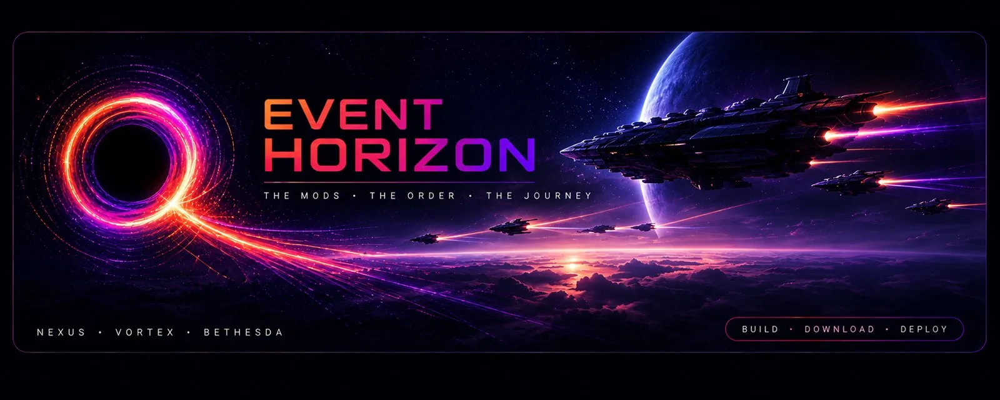

Vortex extension · Nexus Mods
Event Horizon
Build a collection that arrives the way you built it. Then keep it that way.
A Vortex Collection is a list of mods: here they are, install them. An Event Horizon package is a snapshot of a setup that worked: rebuild it exactly, and prove it matches.
- 1,900 mods
- in the Skyrim SE profile it is proven on, plus a 950-mod Fallout 4 collection
- 17,159 of 17,161
- contested files go to the curator's winner on a 1,753-mod collection; the other two are files the game never loads
- 2,600+ tests
- including a render of every screen
For players
- The whole plan before anything is written, with your game setup checked first.
- One mod at a time, every archive hashed against the manifest.
- The curator's load order, pinned and watched: you're told the moment a sort undoes it.
- Collection Doctor shows what is still true, with the repair on each finding.
For curators
- Your whole profile in one table: updates, missing requirements, duplicates and plugins.
- "Make it work" reads a mod's whole requirement chain and installs it in dependency order.
- Builds tell a gone file from a gone page, and ship what can't be downloaded any more by hash.